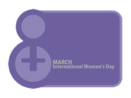
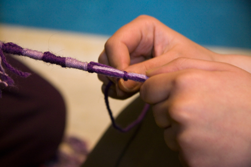
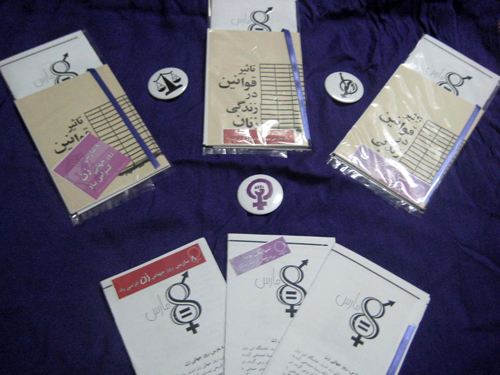
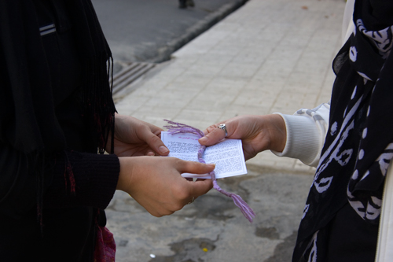

|
|
|
Browsing
Contact Us |
Campaigners |
Face to Face |
Tribune |
Interview |
News |
On the Web |
One Million |
Report
Farsi | Français | German | Italian | Spanish | العربية Also in this section
|
 March 8 Celebrations in IranMonday 8 March 2010 Change for Equality: As March 8th, International Women’s Day, approaches its 100th anniversary, Iranian women’s rights activists took to the streets once again to raise awareness about the importance of this day and to discuss their demands with the public. Women’s rights activists in Iran have been celebrating this day for years, including in their private homes, in parks and through conferences and seminars. The increased pressure on women’s rights activists has forced them to take up more creative approaches in connecting with the public and discussing their demands.
 This year too, a number of activists involved in the One Million Signatures Campaign distributed purple bracelets especially designed for March 8, along with the Campaign’s booklet “The Impact of Discriminatory Laws on the Lives of Women,” and a brochure explaining the history of March 8th in different parts of Tehran, including at Universities, in the streets, shopping malls, restaurants and coffee shops.
 Activists believe that the purple bracelets can serve as reminders of the struggle of Iranian women for achieving equality. In recent months, use of similar symbols has served as reminders of a common struggle between the Iranian people and a means to encourage solidarity in achieving common goals. The purple bracelets too can serve a similar purpose, demonstrating solidarity with the demands of the women’s movement. One of the activists involved in the effort to distribute bracelets and brochures to the public explained to the site of Change for Equality that: “the public was extremely receptive of the bracelets, our brochures and our message.” Another activist explained that: “those receiving these bracelets would immediately tie them around their wrists and would vow to explain the history and significance of the day for their friends.” Another activist involved in the Campaign explained that: “it wasn’t just women who were interested in the bracelets, but men too were eager to tie them around their wrists.” Yet another Campaign activist explained to the site of Change for Equality that: “some of those receiving the bracelets and brochures would ask how they could become more involved in working for women’s equal rights.”
 The receptive attitude of the public to this effort demonstrates once again that despite the immense pressure faced by Campaign activists in the past few years, the arrests and prison detentions and sentences, their message has managed to reach the public, and has created awareness with respect to their demands for women’s equality. It should be noted that Campaign activists in Isfahan and Rasht also distributed similar brochures to residents in their cities on the days leading up to March 8. These activists also engaged in discussions with citizens about their demands and the significance of March 8. The distribution of brochures in these cities as well as Tehran will continue for several days. |